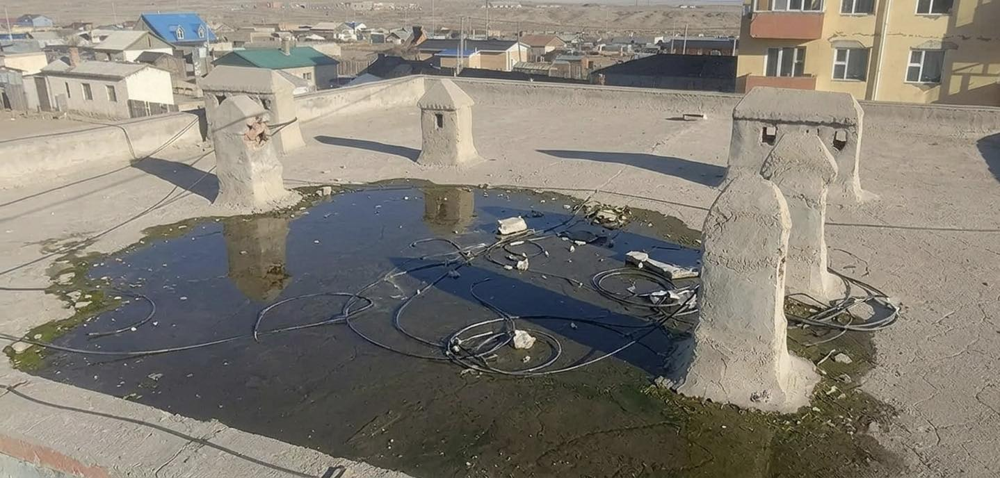
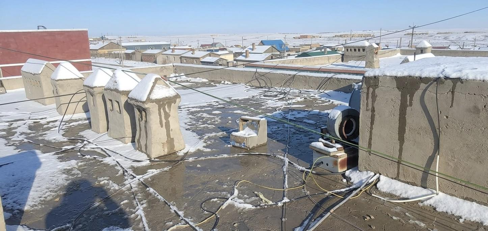
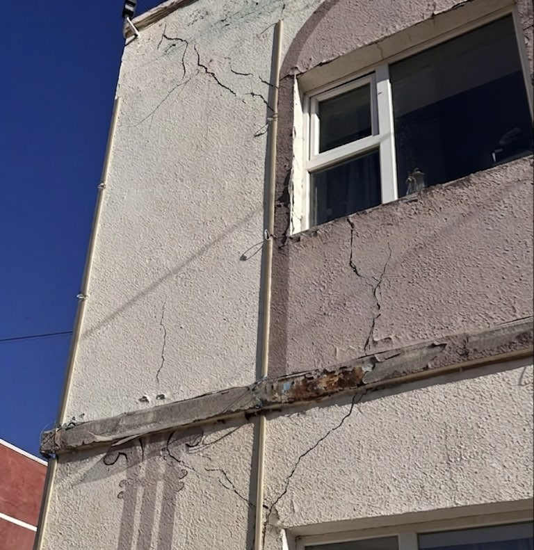
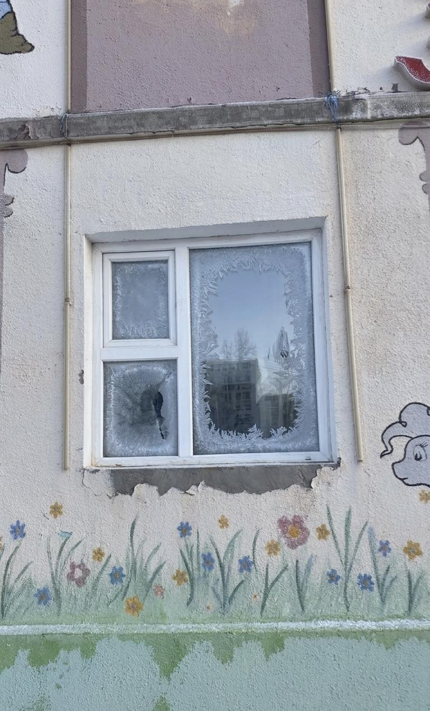

Цэцэрлэг анх 2015 онд байгуулагдснаас хойш 11 дэх жилдээ Сургуулийн өмнөх боловсрол олгох үйл ажиллагаагаа амжилттай зохион байгуулан ажиллаж байна. Манай цэцэрлэг 7 бүлэг 150 хүүхдийн хүчин чадалтай.
2025-2026 оны хичээлийн жилд тус цэцэрлэгт 31 багш ажилтан ажиллаж нийт 7 бүлэгт 234 хүүхэд хөгжиж төлөвшиж байна.. Хамран сургах тойргоор Сайншанд сумын 3, 8 дугаар багийн хүүхдүүдэд сургуулийн өмнөх боловсрол олгож байна. Мөн Дорноговь аймгийн хэмжээнд зөвхөн манай цэцэрлэг нь хөгжлийн бэрхшээлтэй буюу тусгай хэрэгцээт хүүхдүүдийн анги бүлэгтэй бөгөөд эцэг эхчүүдийг нь ажлаа хийх боломж нөхцөл боломжийг хангаж өгдөг. Нийт 36 хүүхдийг төгсгөж сургуульд сурч хөгжих буюу тэгш хамруулан сургах нөхцөлийг бүрдүүлэн ажилладаг.
Багш нар нь боловсролын бакалавр, магистр, мэргэжлийн “Тэргүүлэх”, “Заах аргач” зэрэгтэй багш нар бөгөөд туслах багш нар маань заах арга зүйн сургалтуудад хамрагдсан мэргэжлийн боловсон хүчнээр хангагдсан.
🏗️ САЙНШАНД СУМЫН ХҮҮХДИЙН 11-Р ЦЭЦЭРЛЭГИЙН БАРИЛГЫН ИХ ЗАСВАРЫН ТӨСӨЛ
🏢 ЦЭЦЭРЛЭГИЙН ТАНИЛЦУУЛГА
📄 НЭГ. ТӨСЛИЙН НЭР
Сайншанд сумын хүүхдийн 11-р цэцэрлэгийн барилгын их засварын төсөл.
🎯 ХОЁР. ТӨСЛИЙН ЗОРИЛГО
• Цэцэрлэгийн барилгын аюулгүй байдал, дулаан алдагдлыг багасгах.
• Барилгын ашиглалтын хугацааг уртасгаж, сургуулийн өмнөх боловсролын үйлчилгээний чанарыг сайжруулах .
• Хүүхдэд ээлтэй, эрүүл ахуйн шаардлага хангасан, өнгө үзэмж сайтай орчин бүрдүүлэх.
• Байгууллагын гадаад өнгө төрөх, орчны тохижилтыг сайжруулах.
• Барилгын ашиглалтын хугацааг уртасгаж, сургуулийн өмнөх боловсролын үйлчилгээний чанарыг сайжруулах .
• Хүүхдэд ээлтэй, эрүүл ахуйн шаардлага хангасан, өнгө үзэмж сайтай орчин бүрдүүлэх.
• Байгууллагын гадаад өнгө төрөх, орчны тохижилтыг сайжруулах.
📋 ГУРАВ. ТӨСЛИЙН ЗОРИЛТ
1. Дээврийн хуучирсан материалыг шинэчилж, ус чийг нэвтрэхээс хамгаалах, дулаалга сайжруулах.
2. Байгальд ээлтэй, хоргүй материал ашиглах.
3. Сургуулийн өмнөх боловсролын байгууллагын орчны чанар, багш ажилчид болон суралцагчид, эцэг эхчүүдийн сэтгэл ханамжийг нэмэгдүүлэх.
2. Байгальд ээлтэй, хоргүй материал ашиглах.
3. Сургуулийн өмнөх боловсролын байгууллагын орчны чанар, багш ажилчид болон суралцагчид, эцэг эхчүүдийн сэтгэл ханамжийг нэмэгдүүлэх.
💡 ДӨРӨВ. ТӨСЛИЙН ҮНДЭСЛЭЛ
Цэцэрлэг нь 2 наснаас сургуульд элсэх хүртэл насны хүүхдийг асрах, хамгаалах, хөгжүүлэх цогц үйл ажиллагаа бүхий сургалтын байгууллага юм. Боловсролын стандарт, хөтөлбөрийг хэрэгжүүлэхэд шаардагдах материаллаг нөхцлийг бүрдүүлэхэд хүүхдийн аюулгүй байдлыг хангасан ая тухтай, таатай сургалтын орчныг бүрдүүлэн ажиллах шаардлагатай юм. Цэцэрлэгийн барилгын гадна фасад болон дээврийг иж бүрэн шинэчлэн сайжруулснаар, хүүхдэд аюулгүй, эрүүл ахуйн шаардлага хангасан, дулаан хадгалалт сайтай, өнгө үзэмжтэй орчныг бүрдүүлэхэд оршино. Мөн барилгын ашиглалтын хугацааг уртасгах, байгальд ээлтэй материал ашиглан дулаан алдагдал, ус чийгний нэвчилтийг багасгах, байгууллагын гадаад өнгө төрх, орчны тохижилтыг сайжруулж, эцэг эхчүүд болон олон нийтийн итгэл, сэтгэл ханамжийг нэмэгдүүлэхэд чиглэнэ.
⚠️ ТАВ. ТӨСЛИЙН ХЭРЭГЦЭЭ (Зурагтай)
5.1 Дээвэр:
11 жилийн элэгдэлээс шалтгаалан дээврээс цас, бороо орох бүрт ус чийг нэвчиж дусаал гоожиж анги танхимуудын эд хөрөнгөнд хохирол учирч мөн үндсэн хийцэд нөлөөлж өндөр эрсдэл үүсгээд байгаа юм. Энэ нь барилгын ашиглалтын аюулгүй байдалд сөргөөр нөлөөлөхөөс гадна дулаан алдагдаж цан чийг үүссэний улмаас хананд мөөгөнцөр их үүсдэг. Ялангуяа гал тогоо хэсэг болон 2 давхарын ангиудад үүсгэж байгаа.
5.2 Гадна фасад:
Цэцэрлэгийн барилга ашиглалтад орсноос хойш удаан хугацаа өнгөрч элэгдэл хорогдол их явагдсантай холбоотойгоор гадна фасадны өнгө будаг муудаж, ханын ан цав үүссэн. Цонхнуудын амалгаа, резинэн зөөлөвчүүд муудаж дулаан алдалт үүсгээд байгаа юм. Цэцэрлэгийн гаднах орчин өнгө үзэмжийн хувьд будаг нь арилж өнгө үзэмж алдагдан, цууралт их үүссэн. Иймээс барилгын гадна фасадыг иж бүрэн шинэчилж, ан цавыг арилгаж сайжруулан, байгальд ээлтэй, эрүүл ахуйн шаардлага хангасан материал ашиглах зайлшгүй хэрэгцээ үүсээд байна. Манай цэцэрлэгийн Тусгай хэрэгцээт бүлгийн хүүхдүүдийн зорчих хөдөлгөөнийг дэмжих зорилгоор аюулгүй байдалыг хангаж, хүүхдүүдийн онцлогт тохируулан налуу замыг олон улсын стандартын дагуу шинэчлэн засварлах шаардлагатай байна.
 5.3 Дулаан алдагдал:
Хана, цонхны дулаалга муудсанаас өвлийн улиралд орчны стандарт (18-22*С) хэмээс доош орж хүүхдүүд зузаан цамц өмдтэйгээ өдөржин байх нь хичээл сургалтын үйл ажиллагаа болон сурч хөгжихөд саад учирч, даарснаас ханиад томууны өвчлөл нэмэгдэж хүүхдийн эрүүл мэндэд сөрөг нөлөө үзүүлэхээс гадна, тав тухтай, таатай орчин бүрдэхгүй байгаа юм.
5.3 Дулаан алдагдал:
Хана, цонхны дулаалга муудсанаас өвлийн улиралд орчны стандарт (18-22*С) хэмээс доош орж хүүхдүүд зузаан цамц өмдтэйгээ өдөржин байх нь хичээл сургалтын үйл ажиллагаа болон сурч хөгжихөд саад учирч, даарснаас ханиад томууны өвчлөл нэмэгдэж хүүхдийн эрүүл мэндэд сөрөг нөлөө үзүүлэхээс гадна, тав тухтай, таатай орчин бүрдэхгүй байгаа юм.
 5.4 Сантехник:
Өвлийн улиралд ангиудын болон бүх өрөө тасалгааны паар муу халдаг учраас заримдаа цахилгаан халаагуур ашигладаг, зарим ангийн паар хагарч ус алдаж зэвэрсэн. Ангиудын шугам бөглөрч бохирын хоолой задарч хальдаг зэрэг нь ариун цэвэр, эрүүл ахуйн ноцтой зөрчил үүсгэж ажиллах, суралцах орчинд сөргөөр нөлөөлөхөөс гадна эдийн засгийн зарлага их гарах нөхцөл бүрдүүлж байна.
5.4 Сантехник:
Өвлийн улиралд ангиудын болон бүх өрөө тасалгааны паар муу халдаг учраас заримдаа цахилгаан халаагуур ашигладаг, зарим ангийн паар хагарч ус алдаж зэвэрсэн. Ангиудын шугам бөглөрч бохирын хоолой задарч хальдаг зэрэг нь ариун цэвэр, эрүүл ахуйн ноцтой зөрчил үүсгэж ажиллах, суралцах орчинд сөргөөр нөлөөлөхөөс гадна эдийн засгийн зарлага их гарах нөхцөл бүрдүүлж байна.

 5.5 Ангийн дотор засал:
Дээврээс ус гоожсноос болж таазны шохой эмүльс ховхорч унасан, хана дагаж ус гоожсноос үүдэн мөөгөнцөр үүссэн, жил болгон урсгал засвар хийдэг ч дулаан алдагдалтын улмаас дахин мөөгөнцөр жил бүр үүсдэг. Анги бүлгүүдийн паркетин шал элэгдэж зай завсар их гарсан. Зай завсраар нь хог, тоос шороо их хуримтлагдан бужигнаж эрүүл ахуйд сөргөөр нөлөөлж байна. Дээврээс болон сантехникийн шугамнаас алдсан ус нь шалны завсраар нэвчиж паркетин шал хөөж овойсон, доороосоо мөөгөнцөрдөх нөхцөл бүрдсэн. Иймд стандартын шаардлага хангасан чийгэнд тэсвэртэй цэвэрлэхэд хялбар шалны материалаар солих шаардлагатай байна. Анги танхимын хаалганууд ашиглалтын явцад элэгдэж үндсэн хийц нь муудсан. Өмнө нь засаж сайжруулах зорилгоор хуулга нааж түр зуур шийдвэрлэж байсан боловч одоогийн байдлаар хуулга нь хууларч хаалганы гадаргуу дахин гэмтэж цөмөрсөн тул дахин янзлах боломжгүй болсон байна. Хаалганууд хаагдах нээгдэхэд хүндрэлтэй болсоноос үүдэн анги танхимын дулаан алдалтанд нөлөөлж байна. Ттиймээс одоо байгаа модон хаалгануудыг сольж чанар стандартын шаардлага хангасан шинэ хаалгаар шинэчлэх шаардлагатай байна.
5.5 Ангийн дотор засал:
Дээврээс ус гоожсноос болж таазны шохой эмүльс ховхорч унасан, хана дагаж ус гоожсноос үүдэн мөөгөнцөр үүссэн, жил болгон урсгал засвар хийдэг ч дулаан алдагдалтын улмаас дахин мөөгөнцөр жил бүр үүсдэг. Анги бүлгүүдийн паркетин шал элэгдэж зай завсар их гарсан. Зай завсраар нь хог, тоос шороо их хуримтлагдан бужигнаж эрүүл ахуйд сөргөөр нөлөөлж байна. Дээврээс болон сантехникийн шугамнаас алдсан ус нь шалны завсраар нэвчиж паркетин шал хөөж овойсон, доороосоо мөөгөнцөрдөх нөхцөл бүрдсэн. Иймд стандартын шаардлага хангасан чийгэнд тэсвэртэй цэвэрлэхэд хялбар шалны материалаар солих шаардлагатай байна. Анги танхимын хаалганууд ашиглалтын явцад элэгдэж үндсэн хийц нь муудсан. Өмнө нь засаж сайжруулах зорилгоор хуулга нааж түр зуур шийдвэрлэж байсан боловч одоогийн байдлаар хуулга нь хууларч хаалганы гадаргуу дахин гэмтэж цөмөрсөн тул дахин янзлах боломжгүй болсон байна. Хаалганууд хаагдах нээгдэхэд хүндрэлтэй болсоноос үүдэн анги танхимын дулаан алдалтанд нөлөөлж байна. Ттиймээс одоо байгаа модон хаалгануудыг сольж чанар стандартын шаардлага хангасан шинэ хаалгаар шинэчлэх шаардлагатай байна.
 5.6 Цахилгаан хангамж, гэрэлтүүлгийн систем:
Барилгын цахилгааны монтаж ашиглалтын хувьд хуучирч, утасны гадна тусгаарлагч бүрхүүл(шалбарч, хатаж) муудсан. Энэ нь ачаалал даах чадварыг бууруулж, богино холбоо үүсгэж, улмаа гал түймэр гарах өндөр эрсдэлийг бий болгож байна. Дээврээс ус гоожиж байгаа нь цахилгааны утас, гэрэлтүүлгийн хэрэгсэл рүү нэвчиж, системд гэмтэл учруулахын зэрэгцээ барилгын ханаар гүйдэл гүйх аюултай нөхцөл бүрдсэн. Одоогийн ашиглаж байгаа гэрэлтүүлэг нь эрчим хүчний зарцуулалт ихтэйгээс гадна, зарим бүлгүүдэд гэрэлтүүлгийн хэмжээ стандартын шаардлага хангахгүй бүүдгэр байгаа нь хүүхдийн хараанд сөргөөр нөлөө үзүүлж байгаа юм.
5.6 Цахилгаан хангамж, гэрэлтүүлгийн систем:
Барилгын цахилгааны монтаж ашиглалтын хувьд хуучирч, утасны гадна тусгаарлагч бүрхүүл(шалбарч, хатаж) муудсан. Энэ нь ачаалал даах чадварыг бууруулж, богино холбоо үүсгэж, улмаа гал түймэр гарах өндөр эрсдэлийг бий болгож байна. Дээврээс ус гоожиж байгаа нь цахилгааны утас, гэрэлтүүлгийн хэрэгсэл рүү нэвчиж, системд гэмтэл учруулахын зэрэгцээ барилгын ханаар гүйдэл гүйх аюултай нөхцөл бүрдсэн. Одоогийн ашиглаж байгаа гэрэлтүүлэг нь эрчим хүчний зарцуулалт ихтэйгээс гадна, зарим бүлгүүдэд гэрэлтүүлгийн хэмжээ стандартын шаардлага хангахгүй бүүдгэр байгаа нь хүүхдийн хараанд сөргөөр нөлөө үзүүлж байгаа юм.




📋 ЗУРГАА. ТӨСЛИЙН ҮР ДҮН
1. Дээврийн хуучирсан материалыг шинэчилж, ус чийг нэвтрэхээс хамгаалах, дулаалга сайжруулах.
2. Байгальд ээлтэй, хоргүй материал ашиглах.
3. Сургуулийн өмнөх боловсролын байгууллагын орчны чанар, багш ажилчид болон суралцагчид, эцэг эхчүүдийн сэтгэл ханамжийг нэмэгдүүлэх.
2. Байгальд ээлтэй, хоргүй материал ашиглах.
3. Сургуулийн өмнөх боловсролын байгууллагын орчны чанар, багш ажилчид болон суралцагчид, эцэг эхчүүдийн сэтгэл ханамжийг нэмэгдүүлэх.
💰 ДОЛОО. ТӨСӨЛ ХЭРЭГЖҮҮЛЭХЭД ШААРДАГДАХ ТӨСӨВ
| Зардлын нэр | Бүгд өртөг (Төгрөг) |
|---|---|
| Барилгын засвар | 742,541,509 |
| дотоод халаалт салхивч | 160,286,861 |
| Дотор цэвэр, бохир ус | 106,167,225 |
| Дотор гэрэлтүүлэг | 70,015,309 |
| НИЙТ ТӨСӨВ | 1,079,010,903 |
Төсөл боловсруулсан: Эрхлэгч Ж.Цэндмаа
2026 он